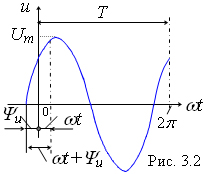
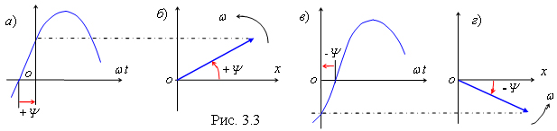

3.1.4.
Основные параметры синусоидальных величин
Для характеристики синусоидальных функций времени используют следующие параметры:

- Мгновенное значение;
- Амплитуда;
- Период;
- Частота;
- Фаза;
- Начальная фаза;
- Угловая частота;
- Соотношение между
T
,
ω
и
ƒ
;
- Сдвиг фаз;
- Среднее значение гармонической функции;
- Действующее значение гармонической функции.
